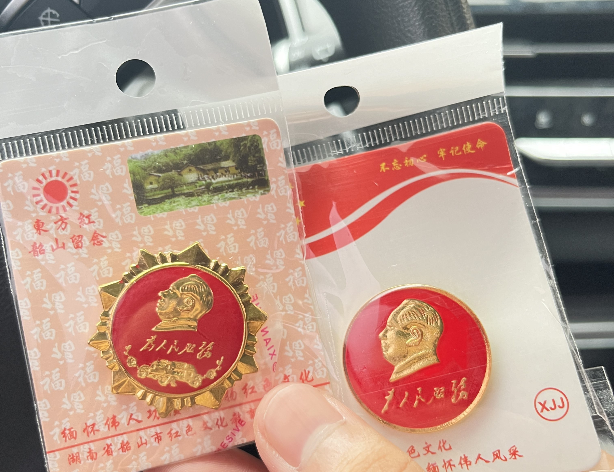
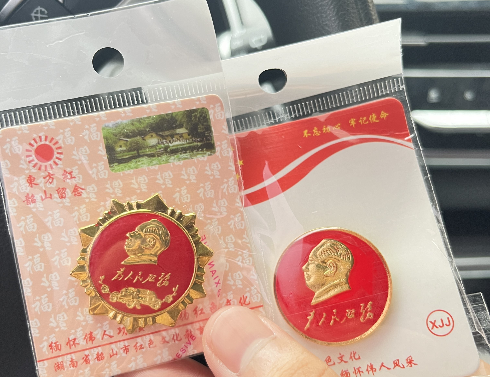

- 21°C~28°C


从“十户人家九户穷，有女莫嫁韶山冲”的穷乡僻壤，到如今生机勃发的红土地，韶山是读懂中国共产党百年光辉历程的初心之地，也是红色旅游融合发展奔小康的范本。

 

韶山是毛泽东同志故居， 1929年故居被国民党政府没收，遭到破坏。1950年按原貌修复。1961年中华人民共和国国务院公布为全国重点文物保护单位。1983年6月27日邓小平在门额匾上题字"毛泽东同志故居"。1997年7月，入选中宣部首批全国爱国主义教育基地。韶山冲上屋场，有一栋坐南朝北的“凹”字型农舍，这里就是毛泽东的诞生地。这是一幢土木结构，坐南朝北，呈凹字形(俗称一担柴式)的农舍。东边13间小青瓦房为毛泽东家，西边5间茅草房为邻居家，居中堂屋共用，建筑面积472.92平方米，占地面积566.39平方米，共有房屋十八间。清光绪四年(1878年)毛泽东曾祖父毛祖人买下此地，经几辈人的努力，毛泽东父亲毛顺生将草房改成瓦房，增大为十三间半。毛泽东在上屋场度过了他难忘的少年时代。一代伟人，中国人民的伟大领袖毛泽东主席的铜像矗立在韶山冲广场。这里背衬韶峰，是韶山冲的中心，距主席故居，毛氏宗祠、毛泽东纪念馆都很近。如今，这里已是韶山最吸引游人的景点，人们在这里瞻仰伟人雄姿，拍照留念，感受一代伟人骄人的风采和无往而不前的巨大力量。毛泽东纪念园位于毛泽东故居西侧约500米的层山叠岭之上，最大的特点是将纪念意义寓于复制实物，让人们于游园之中感受历史进程。景园有两大入口，即南门与东门，南门由毛泽东故居前的通道自然延伸，过关公桥，跨韶河，绕韶山嘴，在桥与嘴之间砌有一仿古牌坊，引导游人北去，这非常符合当年毛泽东由南北上的征程。